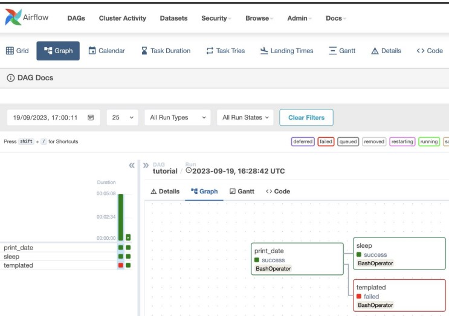
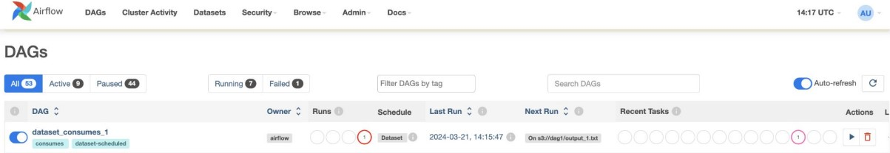
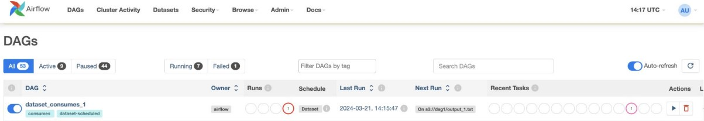
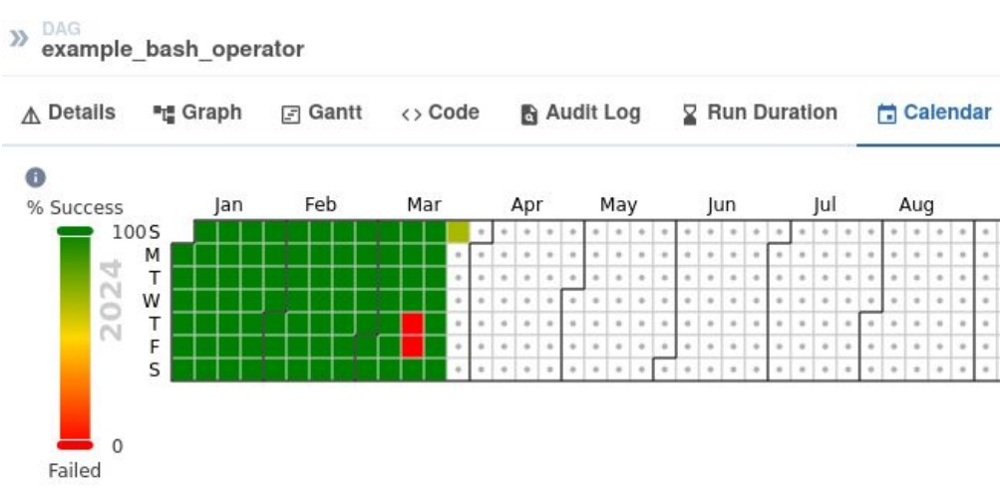
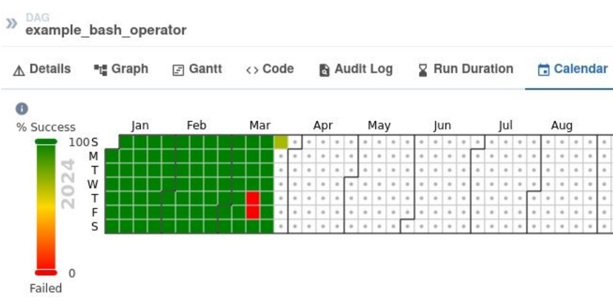
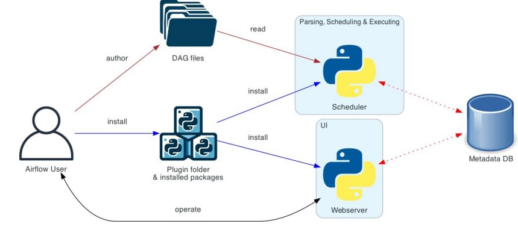
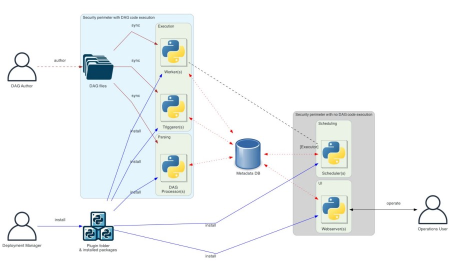
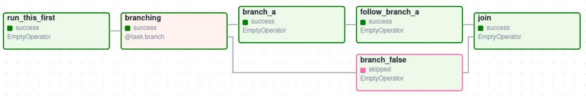

데이터 엔지니어링 스터디 내용정리 - Airflow
개요
- 참여중인 데이터 엔지니어링 스터디에서 배우는 내용 정리
- 데이터 수집, 정제 : pyspark, airflow
- 저장 : elasticsearch
- 시각화 : kibana
4주차 과제리뷰
ElasticSearch
- ES에 기록하기
df.write.format("org.elasticsearch.spark.sql") \
.mode("append") \
.option("es.nodes", <host주소>) \
.option("es.index.auto.create", "yes") \
.option("es.resource", <대상 index>) \
.save()- kibana
- Elastic Stack을 탐색할 수 있게 하는 시각화 및 관리 서비스
- 데이터 검색/모니터링/보안관리/분석/시각화
- Elastic search의 데이터가 들어오는 것도 쉽게 볼 수 있다 (일일이 쿼리 필요없이)
- Elastic Stack을 탐색할 수 있게 하는 시각화 및 관리 서비스
5주차 수업정리
Airflow
- Workflow Platform
- Batch Task 처리/스케줄링/모니터링을 위한 플랫폼
- 한 눈에 볼 수 있는 UI + Task병렬처리 + 모니터링/스케줄링 필요함
- crontab은 스케줄링은 가능하지만, 한 눈에 볼 수 있는 UI가 없고 병렬처리 기능 없음
- Airflow
- Batch Task 처리/스케줄링/모니터링을 위한 Workflow Platform 중 하나
- open-source platform forbatch-oriented workflows
- 여러 플러그인을 제공해 connectivity 좋음
- Airflow UI(Dashboard)
- 실패한 경우 처음부터 실행할 필요 없이, 실패한 log만 보거나 실행 가능
- 다양한 Status : deferred, failed, running 등
- Calender탭 : 요일별 성공/실행 등
- Task Duration탭 : 작업별 소요시간 등
- Code탭 : 코드실행 결과 등을 확인. 수정은 불가하나 수정사항은 바로 확인 가능 
- Airflow UI(DAGs)
- 작업별 on/off, 태그 설정, Last Run 등 확인 가능 
- 작업별 on/off, 태그 설정, Last Run 등 확인 가능 
- Airflow UI(Calender)
- 큰 장애가 있던 날 등을 확인 가능 
- 큰 장애가 있던 날 등을 확인 가능 
- Airflow 구조
- 플러그인을 Webserver와 Scheduler에 설치
- 작업을 설정하면 Metadata DB에 들어가고 Scheduler가 읽어들여 작업 스헹
- 유저가 작성한 DAG로 작업수행 후 결과를 다시 DB에 저장
- 작업결과를 Webserver가 읽어 UI로 보여줌
- 위와 같은 구조이므로 DB가 먼저 떠야함
- 실습환경은 postgres로 되어있음(depends_on: postgres)

- 실습환경은 postgres로 되어있음(depends_on: postgres)
- Airflow 구조 (실무적 시나리오)
- DAG작성자,Workflow플랫폼 관리자, Operation user(작업여부 등 확인, DAG작성자일 수 있음)
- 여러 개의 Execution node가 작성된 DAG job 실행
- Operation user가 실행결과나 로그 등을 확인하거나 긴급/필요한 경우 작업 중단 등 수행 
- Components(구성요소)
- Database : Storing metadata
- Scheduler : Schedule & execute DAG
- Worker : Execute tasks
- Scheduler와 같은 역할. Scheduler가 여러개 뜬 것과 비슷하게 이해
- Web server : UI
- REST API
- Airflow설정이나 강제실행 등을 외부에서 원격으로 REST API호출해서 가능
- 운영 편의성의 한 방법으로 제공(리소스 조정이나 권한부여 등)
- json input & response
- Airflow Pros & Cons(장단점)
- 장점
- 범용성 높음(타 워크플로우 대비 플러그인 많음)
- 활발한 커뮤니티(유저 많음)
- Python으로 쉽고, 정교한(xml보다) DAG 구성가능
- Retry기능
- 단점
- 기술적으로 성숙 중(여러 이슈가 있음)
- 실무에서 사용하기에는 무리 없는 정도
- 실무에서 사용하기에는 무리 없는 정도
- 기술적으로 성숙 중(여러 이슈가 있음)
- 장점
- 기타 유사 플랫폼
- Jenkins (Devops구성 등에 많이 사용)
- Hudson에서 Jenkins로 이름변경. 처음에는 build 실패시 로그 등 확인하고자 만들어짐(build자동화)
- 실패가 누적되면 좌측 상단 사람아이콘이 점점 화난 얼굴로 바뀌어 확인 가능
- 플러그인을 활용해서 자동화 작업 처리
- 업데이트가 안되거나 불안정한 플러그인이 좀 있음
- Task파이프라인을 만들어 CI/CD를 구축하는데 사용
- Hudson에서 Jenkins로 이름변경. 처음에는 build 실패시 로그 등 확인하고자 만들어짐(build자동화)
- Azkaban
- Hadoop Batch job을 위해 LinkedIn 이 개발
- UI담당 웹서버 + Auth + 스케줄링 + 모니터링이 각각 1개만 존재
- 위와 함께 별도의 executor가 다수 존재(executor만 다수 존재)
- 다양한 기능 부족(airflow는 좀 더 범용적인 타겟)
- multiple executor mode 설정해야 병렬처리 가능
- busy-waiting 등의 작업대기 패턴 지정 불가
- Hadoop기반은 좀 더 유리한 점이 있고, Airflow와는 서로 있거나 없는 기능이 존재
- Oozie, Luigi 등
- Jenkins (Devops구성 등에 많이 사용)
- Airflow관련 실습 참고사항(세팅방법)
Dockerfile
- 실습상 Pyspark로 실행되므로 Airflow에 파이썬 패키지를 깔 일은 거의 없음
- Airflow에서 실행하기 위한 패키지 등이 필요하다면 Dockerfile을 수정
- 하단 코드의
pip install부분을 수정
- airflow가 뜨지 않는다면 arm64가 맞는지 확인 후 수정
- 하단 코드의
ENV JAVA_HOME /usr/lib/jvm/java-11-openjdk-arm64수정
- 하단 코드의
- Dockerfile수정 후 단순히 down & up하면 반영되지 않음
기존 이미지가 있는지 확인 후 이미지가 있으면 Docker는 별도 작업을 하지 않음
docker stop → rm → rmi 하여 기존 이미지 제거 후, up하여 build 진행
FROM apache/airflow:2.7.1-python3.11 USER root RUN apt-get update RUN apt-get install -y gcc python3-dev openjdk-11-jdk wget RUN apt-get clean # Set JAVA_HOME environment variable ENV JAVA_HOME /usr/lib/jvm/java-11-openjdk-arm64 USER airflow RUN pip install apache-airflow apache-airflow-providers-apache-spark pyspark elasticsearch
- 실습상 Pyspark로 실행되므로 Airflow에 파이썬 패키지를 깔 일은 거의 없음
Docker-compose.yml
webserver: <<: *airflow-common command: webserver # application 중 webserver ports: - "8081:8080" depends_on: - scheduler # scheduler가 먼저떠야해서 depends_on 설정 scheduler: <<: *airflow-common # 오류가 있다면 하단 command에 'airflow db init &&' 를 추가 command: bash -c "airflow db migrate && airflow users create --username airflow --firstname airflow --lastname airflow --role Admin --email airflow@gmail.com --password airflow && airflow scheduler"
- Airflow 설치방법
- Installation
- https://airflow.apache.org/docs/apache-airflow/stable/installation/index.html
- Quick Start
- https://airflow.apache.org/docs/apache-airflow/stable/start.html
- Installation
DAG 작성하는법
DAG(Directed Acyclic Graph)
- 작업의 dependencies과 relationships를 정의
- 다양한 Operator가 있음 (Operator = Task의 단위)
DAG 선언
with문 사용
from airflow import DAG from airflow.operators.empty import EmptyOperator with DAG( dag_id="my_dag_name", start_date=datetime.datetime(2021, 1, 1), schedule="@daily", # 리소스가 비는 시간에 실행해줌 ): EmptyOperator(task_id="task")변수에 할당 후 operator에 넣기
my_dag = DAG( dag_id="my_dag_name", start_date=datetime.datetime(2021, 1, 1), schedule="@daily", ) EmptyOperator(task_id="task", dag=my_dag)데코레이터 사용
from airflow.decorators import dag @dag(start_date=datetime.datetime(2021, 1, 1), schedule="@daily") def generate_dag(): EmptyOperator(task_id="task") generate_dag()데코레이터로 task지정 (+순서지정)
from airflow.decorators import task from airflow.operators.bash import BashOperator # A DAG represents a workflow, a collection of tasks with DAG(dag_id="demo", start_date=datetime(2022, 1, 1), schedule="0 0 * * *") as dag: # Tasks are represented as operators hello = BashOperator(task_id="hello", bash_command="echo hello") @task() def airflow(): print("airflow") # Set dependencies between tasks hello >> airflow()
Operators(플러그인 역할)
- HttpOperator
- MySqlOperator
- PostgresOperator
- MsSqlOperator
- OracleOperator
- JdbcOperator
- DockerOperator
- HiveOperator
- S3FileTransformOperator
- PrestoToMySqlOperator
- SlackAPIOperator
Python operator예시
샘플코드에서 xcom_pull()은 DAG 내의 task 사이에서 데이터를 전달할 때 사용
dag = DAG( dag_id="example_template_as_python_object", schedule=None, # @daily, 0 0 * * * 등 start_date=pendulum.datetime(2021, 1, 1, tz="UTC"), catchup=False, # start_date와 현재 사이의 실행이 안된 분량을 catchup=True하여 실행 render_template_as_native_obj=True, ) # task 데코레이터 사용 @task(task_id="extract") def extract(): data_string = '{"1001": 301.27, "1002": 433.21, "1003": 502.22}' return json.loads(data_string) extract_task = extract() # Python operator 사용 def transform(order_data): print(type(order_data)) total_order_value = 0 for value in order_data.values(): total_order_value += value return {"total_order_value": total_order_value} transform_task = PythonOperator( task_id="transform", # transform함수의 argument넣기 & xcom_pull로 extract task데이터 가져오기 op_kwargs={"order_data": "{{ti.xcom_pull('extract')}}"}, python_callable=transform, ) extract_task >> transform_task
Dependency 정의(예시)
순서가 중요하지 않다면 리스트[]에 넣기
- first_task >> [second_task, third_task]
방향(<<)에 따라 역순으로 실행
- third_task << fourth_task
first_task 후 [second_task, third_task]
- first_task.set_downstream([second_task, third_task])
fourth_task 후 third_task
- third_task.set_upstream(fourth_task)
cross_downstream
# Before # [op1, op2] >> op3 # [op1, op2] >> op4 # After (Before의 2줄 코드를 아래와 같이 1줄로 표현 가능) from airflow.models.baseoperator import cross_downstream cross_downstream([op1, op2], [op3, op4])chain
# Before # op1 >> op2 >> op3 >> op4 # After1 (>> 대신 chain 사용) from airflow.models.baseoperator import chain chain(op1, op2, op3, op4) # After2 (task많은 경우 comprehension으로 dynamic하게 사용) chain(*[EmptyOperator(task_id='op' + i) for i in range(1, 6)])
Retry
- default_args에 넣어서 설정
- 후반부로 갈수록 느리게하는 exponential 전략 등 있음
from airflow.models.dag import DAG from airflow.operators.bash import BashOperator import datetime import pendulum dag = DAG( "tutorial", default_args={ "depends_on_past": True, # 과거 실행에 의존 "retries": 1, # retry 횟수 "retry_delay": datetime.timedelta(minutes=3), # retry주기 }, start_date=pendulum.datetime(2015, 12, 1, tz="UTC"), description="A simple tutorial DAG", # UI에서 보임 schedule="@daily", catchup=False, )Branch
샘플코드
@task.branch(task_id="branch_task") def branch_func(ti=None): xcom_value = int(ti.xcom_pull(task_ids="start_task")) if xcom_value >= 5: return "continue_task" elif xcom_value >= 3: return "stop_task" else: return None start_op = BashOperator( task_id="start_task", bash_command="echo 5", do_xcom_push=True, # 터미널에 찍힌 위의 5값이 xcom으로 전달 dag=dag, ) branch_op = branch_func() # branch_func에 필요한 "continue_task", "stop_task" continue_op = EmptyOperator(task_id="continue_task", dag=dag) stop_op = EmptyOperator(task_id="stop_task", dag=dag) start_op >> branch_op >> [continue_op, stop_op]샘플코드 with 이미지

class_w5_6.jpg dag = DAG( dag_id="branch_without_trigger", schedule="@once", start_date=pendulum.datetime(2019, 2, 28, tz="UTC"), ) run_this_first = EmptyOperator(task_id="run_this_first", dag=dag) @task.branch(task_id="branching") def do_branching(): return "branch_a" branching = do_branching() branch_a = EmptyOperator(task_id="branch_a", dag=dag) follow_branch_a = EmptyOperator(task_id="follow_branch_a", dag=dag) branch_false = EmptyOperator(task_id="branch_false", dag=dag) join = EmptyOperator(task_id="join", dag=dag) run_this_first >> branching branching >> branch_a >> follow_branch_a >> join branching >> branch_false >> join
Trigger rule
종류
- all_success (default): All upstream tasks have succeeded
- all_failed: All upstream tasks are in a failed or upstream_failed state
- all_done: All upstream tasks are done with their execution
- all_skipped: All upstream tasks are in a skipped state
- one_failed: At least one upstream task has failed (does not wait for all upstream tasks to be done)
- one_success: At least one upstream task has succeeded (does not wait for all upstream tasks to be done)
- one_done: At least one upstream task succeeded or failed
- none_failed: All upstream tasks have not failed or upstream_failed - that is, all upstream tasks have succeeded or been skipped
- none_failed_min_one_success: All upstream tasks have not failed or upstream_failed, and at least one upstream task has succeeded.
- none_skipped: No upstream task is in a skipped state - that is, all upstream tasks are in a success, failed, or upstream_failed state
- always: No dependencies at all, run this task at any time
샘플코드
with DAG( dag_id="latest_only_with_trigger", schedule=datetime.timedelta(hours=4), start_date=pendulum.datetime(2021, 1, 1, tz="UTC"), catchup=False, tags=["example3"], # UI에서 태그로 확인가능 ) as dag: latest_only = LatestOnlyOperator(task_id="latest_only") task1 = EmptyOperator(task_id="task1") task2 = EmptyOperator(task_id="task2") task3 = EmptyOperator(task_id="task3") # trigger_rule 입력 ## TriggerRule.ALL_DONE 이므로 upstream인 latest_only/task1/task2 실행되면 실행 task4 = EmptyOperator(task_id="task4", trigger_rule=TriggerRule.ALL_DONE) latest_only >> task1 >> [task3, task4] task2 >> [task3, task4]
Task Group
- Task를 묶고 싶을 때 사용(+설정을 일괄로 부여하고 싶을 때)
샘플코드1 (Task묶기)
from airflow.decorators import task_group # task를 그룹으로 묶음 @task_group() def group1(): task1 = EmptyOperator(task_id="task1") task2 = EmptyOperator(task_id="task2") task3 = EmptyOperator(task_id="task3") group1() >> task3샘플코드2 (Task를 묶고 설정을 일괄로 부여)
우선순위는 task에 개별로 부여한 설정을 적용한 후, group의 설정을 적용한다
# task를 그룹으로 묶고, retries 등 일괄로 설정할 때 @task_group(default_args={"retries": 3}) def group1(): """This docstring will become the tooltip for the TaskGroup.""" task1 = EmptyOperator(task_id="task1") task2 = BashOperator(task_id="task2", bash_command="echo Hello World!", retries=2) print(task1.retries) # print값 : 3 print(task2.retries) # print값 : 1
- Task를 묶고 싶을 때 사용(+설정을 일괄로 부여하고 싶을 때)
Sub Dags
Sub Dags끼리 Args(설정) 등을 적용할 때 사용
샘플코드(Dag를 만든 후, SubDagOperator를 사용)
with DAG( dag_id=DAG_NAME, default_args={"retries": 2}, start_date=datetime.datetime(2022, 1, 1), schedule="@once", tags=["example"], ) as dag: start = EmptyOperator(task_id="start",) section_1 = SubDagOperator(task_id="section-1", subdag=subdag(DAG_NAME, "section-1", dag.default_args), ) some_other_task = EmptyOperator(task_id="some-other-task",) section_2 = SubDagOperator(task_id="section-2", subdag=subdag(DAG_NAME, "section-2", dag.default_args), ) end = EmptyOperator(task_id="end",) start >> section_1 >> some_other_task >> section_2 >> end
Sub Dag와 Task group 차이
- Configuration 적용
- Sub dags는 여러 Dag Conf, Task group은 하나의 Dag Conf
- View and statistics
- Sub dags는 여러개의 현황이, Task group은 하나로 보임
- Job의 병렬 처리
- Sub dags는 여러개의 job으로, Task group은 하나의 job으로 executor가 실행
- 선언(declaration)과 규칙(naming restirctions)
- Sub dags가 좀 더 어려움
- Sub dags가 좀 더 어려움
- Configuration 적용
Copyright © 2024 Kibok Park All rights reserved.